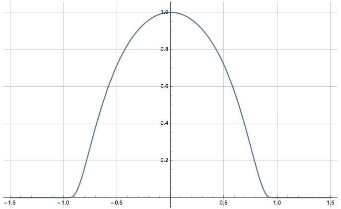

Differential forms in algebraic topology
These are the course materials for the special topics course Differential forms in algebraic topology at the ANU in 2024. This was a reading course on the book by R. Bott and L. Tu by the same title.
1. Assessment
The final grade in the course will be based on:
- Three homework sets for 36% total.
- A take home final exam for 34%.
- An expository paper for 20%.
- Contribution to course notes (scribing the presentations): 10%.
If you are taking the course as an ASC (or you wish to), you will also give a presentation based on your paper.
2. Homework
2.1. Homework 1
Due by the end of Friday, 16 August by email.
- In Example 2.9 (the cohomology with compact support of the circle), describe the generators corresponding to each copy of \(\mathbf{R}\) in the Mayer–Vietoris sequence and describe their images under the maps in the sequence.
- Let \(M = \mathbf{R}^2 - \{P\}\) be the once punctured plane. Determine the groups \(H^{*}_c(M)\) and describe all the generators.
- Find a diffeomorphism \[ \mathbf{R}^2 - \{0\} \cong S^1 \times \mathbf{R}.\] Consider the homotopy operator \(K\) given by this diffeomorphism as sketched just before Corollary 4.1.2. Describe \[ K \colon \Omega^2(\mathbf{R}^2 - \{0\}) \to \Omega^1(\mathbf{R}^2-\{0\}),\] and explain how it leads to the conclusion \[ H^2(\mathbf{R}^2 - \{0\}) = 0.\]
- Exercise 4.3.1 (Volume form on a sphere). Assume that you already know the groups \(H^{*}(S^n)\).
- Exercise 4.8 (Cohomology groups of the open Mobius strip).
2.2. Homework 2
Due by the end of Friday, 30 August by email.
Let \(M = \mathbf{R}^2 - \{p_1, \dots, p_n\}\) for distinct points \(p_1, \dots, p_n\). Let \(R_i\) be a ray coming out of \(p_i\) and going to infinity (without hitting any other points). Let \(C_i\) be a small circle centered at \(p_i\).
Prove that the Poincare duals of \(R_i\) in \(H^1(M, \mathbf{R})\) form a basis. Likewise, prove that the Poincare duals of \(C_i\) in \(H^1_c(M, \mathbf{R})\) form a basis.
- Let \(M = \mathbf{R}^n - \{0\}\). Determine \(H^*(M, \mathbf{R})\) and \(H^{*}_c(M, \mathbf{R})\). Find nice submanifolds whose Poincare duals give bases for these spaces.
- Determine \(\operatorname{Vect}_k(S^1)\) (the set of isomorphism classes of vector bundles of rank \(k\) on \(S^1\)).
- Let \(\pi \colon E \to \mathbf{C}P^n\) be the tautological rank 1 bundle. That is, \[ E = \{(x, z) \in \mathbf{C}^{n+1} \times \mathbf{C}P^n \mid x \in z\}\] with \(\pi\) given by the second projection. Describe the transition functions of \(E\) in the standard open cover of \(\mathbf{C}P^n\). Is \(E\) the trivial bundle?
- Replace \(\mathbf{C}\) by \(\mathbf{R}\) in the exercise above.
2.3. Homework 3
Due by the end of Friday, 11 Oct by email.
- Find the cohomology of \(\mathbf{R}P^n\) by following Exercise 6.46. (This problem has 4 parts, so it is worth 2 usual problems.)
- Find a good cover of \(\mathbf{R}^2\) minus \(2\) points, and use it to find its cohomology.
This and the next problem have a long setup.
Let \(\pi \colon X \to Y\) be a covering space of finite degree \(n\). Let \(\mathbf{R}_X\) be the constant sheaf with fiber \(\mathbf{R}\) on \(X\). By definition, this is the sheaf whose value on \(V \subset X\) is the set of locally constant maps \(V \to \mathbf{R}\). Consider the sheaf \(\pi_{*} \mathbf{R}_X\). By definition, its value on \(U \subset Y\) is the value of \(\underline{\mathbf{R}_X}\) on \(\pi^{-1}(U)\). (This is also the sheaf \(\mathcal H^{0}\) of the fiber bundle \(\pi \colon X \to Y\).)
Check, but do not turn in, the following:
- We have a map of sheaves (called “pullback”) \[ p \colon \mathbf{R}_Y \to \pi_{*}\mathbf{R}_{X}\] defined on \(U \subset Y\) by \[ g \mapsto g \circ \pi.\]
- We have a map of sheaves (called “trace”) \[ t \colon \pi_{*}\mathbf{R}_{X} \to \mathbf{R}_Y\] defined on \(U \subset Y\) by \[ f \mapsto (y \mapsto \sum_{x \in \pi^{-1}(y)} f(x)).\]
- The composite \(t \circ p\) is multpilication by \(n\).
- Let \(F\) be the kernel of \(t\). By definition, its value on \(U \subset Y\) is the kernel of \(t(U)\). Then \(F\) is a locally constant sheaf with fiber \(\mathbf{R}^{n-1}\).
- The map \((\textrm{inculsion}, \textrm{pullback})\) gives an isomorphism \[ F \oplus \mathbf{R}_Y \cong \pi_{*}\mathbf{R}_X.\]
Take \(X = S^1\) and \(Y = S^1\) and let \(\pi \colon X \to Y\) be the covering space of degree \(n\). Using a good cover of \(Y\), find \(H^{*}(Y, F)\).
You may use that the Cech complex of any good cover computes the cohomology of a locally constant sheaf. Check that you have the right answer using \[ H^*(X, \mathbf{R}_X) = H^*(Y, \pi_* \mathbf{R}_X),\] which is Exercise 13.6.
- Let \(X = S^1\) and \(Y = S^1\) with \(\pi \colon X \to Y\) the degree \(n\) covering map. Define \(F\) as in the previous problem. Describe the monodromy \[ \pi_1(Y) \to \operatorname{Aut}(\mathbf{R}^n)\] of \(\pi_{*}\mathbf{R}_{X}\) and \[ \pi_1(Y) \to \operatorname{Aut}(\mathbf{R}^{n-1})\] of \(F\).
3. Paper ideas
The final paper should be about 10 pages long (no less than 5, no more than 15). It can be on any topic related to what we have covered in class. Topics in Bott and Tu that we did not cover are completely fine.
Here are some ideas for topics, including some references, or a brief explanation.
The Riemann–Hilbert correspondence
The following three kinds of objects are “the same”:
- A vector bundle with a flat connection,
- A locally constant vector bundle,
- A representation of the fundamental group.
- Classification of surfaces
- Massey, “A basic course in algebraic topology”, Chapter 1.
- The cohomology of complex Grassmannians
- Bott and Tu, Section 23.
- Complex line bundles on \(\mathbf{C}P^1\)
- The only complex rank 1 vector bundles on \(\mathbf{C}P^1\) are the tensor powers of the tautological bundle.
- The cohomology of matrix groups
- Cohomology of \(\operatorname{SO}(n)\) or \(\operatorname{GL}(n)\) or \(\operatorname{U(n)}\).
- Chern classes
- Bott and Tu, Section 20
- Pontrajin classes
- Bott and Tu, Section 22.
- The classifying space of vector bundles
- Bott and Tu, Section 23.
- Complex manifolds and Dolbeault cohomology
- Voisin, “Hodge theory and complex algebraic geometry”, Chapter 2.
- Duality in the non-orientable setting
- Bott and Tu, Section 7.
- The Leray spectral sequence
- Bott and Tu, end of Section 14
- Diffeomorphisms of the 2-sphere
- Smale, “Diffeomorphisms of the 2-sphere”
- Ehresmann’s theorem
- Voisin, “Hodge theory and complex algebraic geometry”, Chapter 9, Section 1.
- Mapping class groups and surface bundles
- Morita, “The geometry of characteristic classes”, Chapter 4.
- Lefschetz fixed point formula
- Bott and Tu, Exercise 11.26.
4. Final exam
4.1. Instructions
- You may consult Differential forms in algebraic topology by Bott and Tu. You may not consult any other source, including any source on the internet. You may not contact any other students in the course during the exam.
- Some students are taking the exam at a slightly different time, so please do not talk about the exam with anyone until the end of the week.
You may use any result from the book or the homework. If you use a result from the book, please cite it by name or number. If you use a result from the homework, please clearly write the statement that you are using.
For example, the following are OK:
- “By the Thom isomorphism theorem …”
- “By Theorem 6.8 from Bott and Tu …”
- “On the homework, we proved that \(\mathbf{R}\mathbf{P}^n\) is orientable if \(n\) is odd. Therefore, …”
For example, the following are not OK:
- “By a result from Bott and Tu …”
- “By a homework problem, …”
- There are four questions, each worth 10 marks.
- Write clearly and legibly on any paper (typing is OK too, but not required). Please scan and send me your exam by email by 9pm.
- If you have questions, feel free to ask by email.
\vfill
The questions are on the next page.
\newpage
4.2. Questions
Please justify your answers unless specifically asked otherwise.
- Let \(f \colon \mathbf{R} \to \mathbf{R}\) be the function with the following graph.

Note that \(f\) is smooth, compactly supported, and \(\int_{\mathbf{R}} f(x) dx = 1\).
Let \(x, y\) be the standard coordinates on \(\mathbf{R}^2\).
Set \(\omega = f(x) f(y) dx \wedge dy\).
- Does there exist a \(1\)-form \(\eta\) such that \(\omega = d \eta\)? If so, find \(\eta\). If not, why not?
- Does there exist a compactly supported \(1\)-form \(\eta\) such that \(\omega = d \eta\)? If so, find \(\eta\). If not, why not?
- Let \(L \subset \mathbf{R}^3\) be a line and \(p \in \mathbf{R}^3\) a point not on \(L\).
Set \(M = \mathbf{R}^3 - (L \cup \{p\})\) (the complement of the union of \(L\) and \(p\)).
- Find \(H^{*}_c(M, \mathbf{R})\).
- Describe closed submanifolds of \(M\) whose Poincare duals form a basis of \(H^{*}_c(M, \mathbf{R})\). Justify your answer for \(H^1_c(M, \mathbf{R})\) or \(H^2_c(M, \mathbf{R})\).
- Let \(E \to S^1\) be a non-trivial real vector bundle of rank 2. Which of the following are trivial: \(E^{*}\), \(E \oplus E\), \(E \otimes E\).
- Consider the standard open cover \(\{U_0,U_1, U_2\}\) of \(\mathbf{C}\mathbf{P}^2\).
That is, \[U_i = \{[x_{0}:x_1:x_2] \mid x_i \neq 0\}.\]
Consider the Cech–de-Rham double complex for this open cover with coefficients in \(\mathbf{R}\).
- Write the \(E_1\) page of the associated spectral sequence.
- Compute the \(E_2\) page.